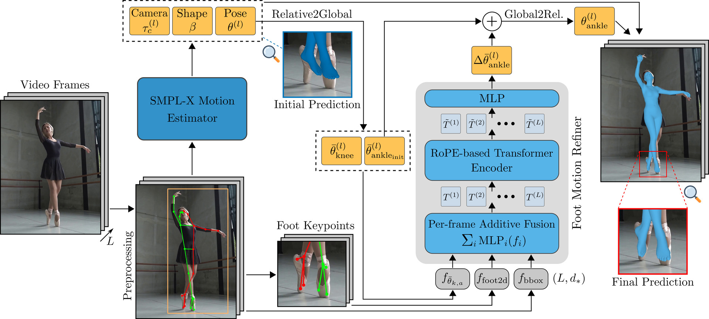
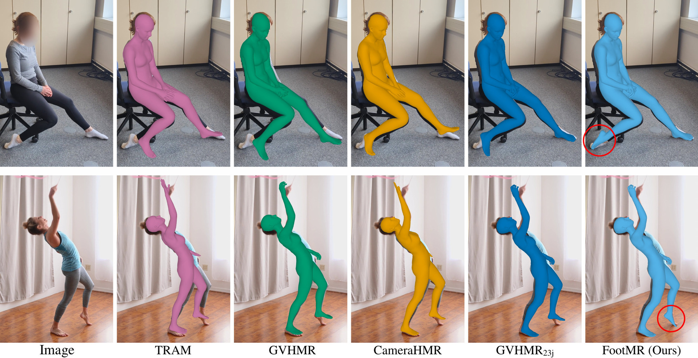
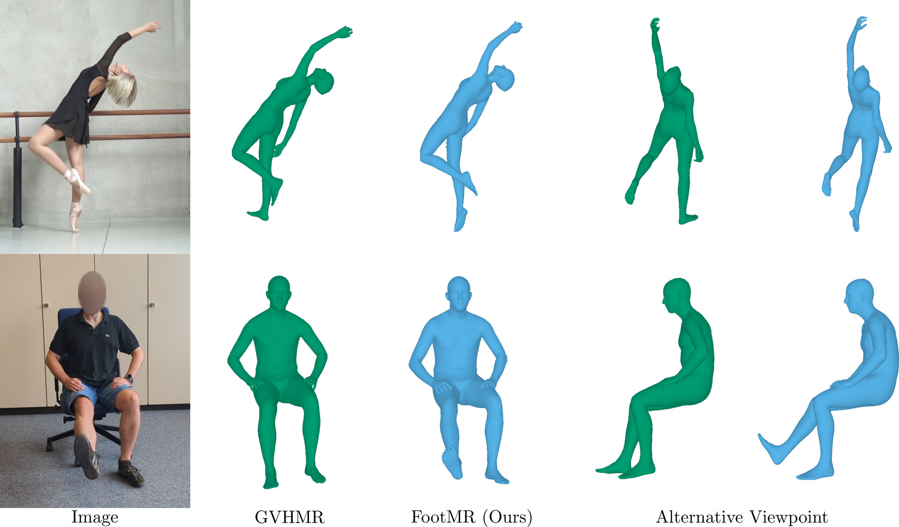
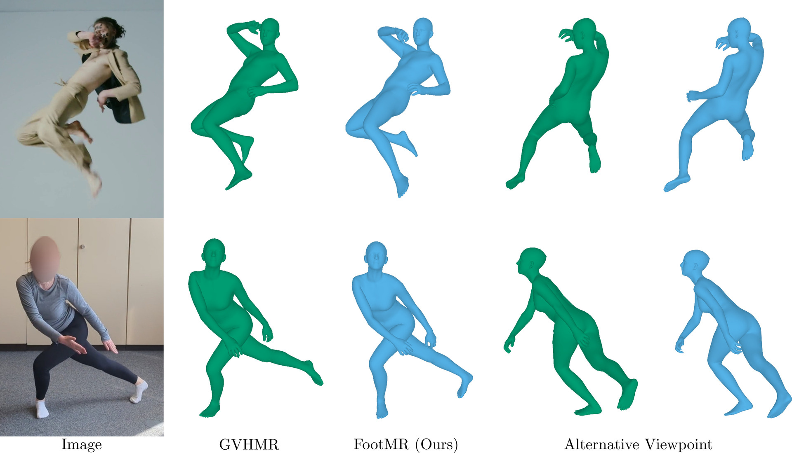

Improving 3D Foot Motion Reconstruction in Markerless Monocular Human Motion Capture
Abstract
State-of-the-art methods can recover accurate overall 3D human body motion from in-the-wild videos. However, they often fail to capture fine-grained articulations, especially in the feet, which are critical for applications such as gait analysis and animation. This limitation results from training datasets with inaccurate foot annotations and limited foot motion diversity. We address this gap with FootMR, a Foot Motion Refinement method that refines foot motion estimated by an existing human recovery model through lifting 2D foot keypoint sequences to 3D. By avoiding direct image input, FootMR circumvents inaccurate image–3D annotation pairs and can instead leverage large-scale motion capture data. To resolve ambiguities of 2D-to-3D lifting, FootMR incorporates knee and foot motion as context and predicts only residual foot motion. Generalization to extreme foot poses is further improved by representing joints in global rather than parent-relative rotations and applying extensive data augmentation. To support evaluation of foot motion reconstruction, we introduce MOOF, a 2D dataset of complex foot movements. Experiments on MOOF, MOYO, and RICH show that FootMR outperforms state-of-the-art methods, reducing ankle joint angle error on MOYO by up to 30% over the best video-based approach.
Approach

Overview of our framework. Given a monocular video, a SMPL-X motion estimator is employed to estimate 3D human motion including erroneous initial ankle rotations. Knee and ankle predictions are then transformed from parent-relative to global rotations and used together with 2D foot keypoints and bounding boxes as input for Foot Motion Refinement (FootMR). FootMR refines the initial ankle predictions by estimating residual rotations. After fusing the refined ankle rotations with the remaining body parameters, the final output of our framework is accurate and temporally coherent 3D human body and foot motion.
Results



BibTeX
@InProceedings{wehrbein26footmr,
author = {Wehrbein, Tom and Rosenhahn, Bodo},
title = {Improving 3D Foot Motion Reconstruction in Markerless Monocular Human Motion Capture},
booktitle = {International Conference on 3D Vision (3DV)},
year = {2026},
}